treatment )
В полтора года всё происходит впервые. Первая «моя» ложка, первое «нет», первый костюм, который не снимешь ни за что. Взрослым такой выбор кажется смешным — для малыша важнее него нет ничего.
Я хочу снять ролик так, чтобы мы поверили Самату. Не умилялись со стороны, а на двадцать секунд оказались на его высоте: там, где стол выше головы, мамины руки появляются сверху, а жирафий капюшон — лучшая одежда для прогулки.
Сценарий уже знает, что главный здесь ребёнок. Моя задача — чтобы это было видно в каждом кадре: в камере, в свете, в монтаже.
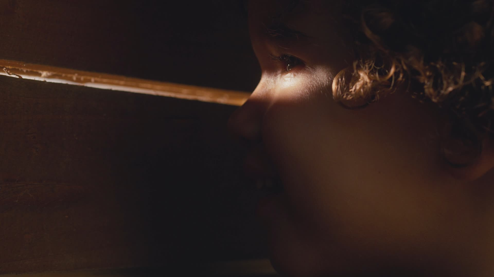
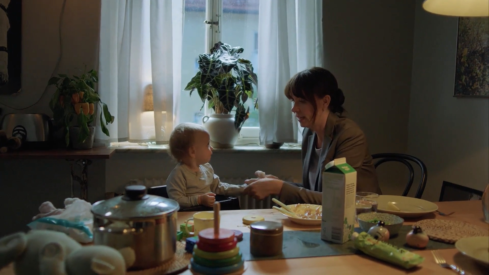
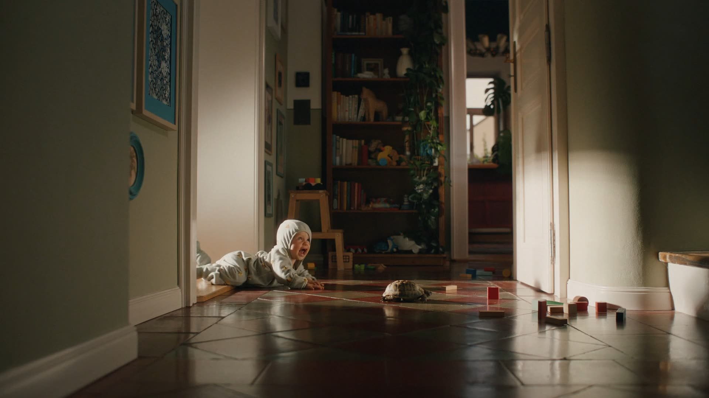
Двадцать секунд, тринадцать событий и малыш, который не умеет играть по команде. Значит, снимаем не постановку, а то, что с ним правда происходит.
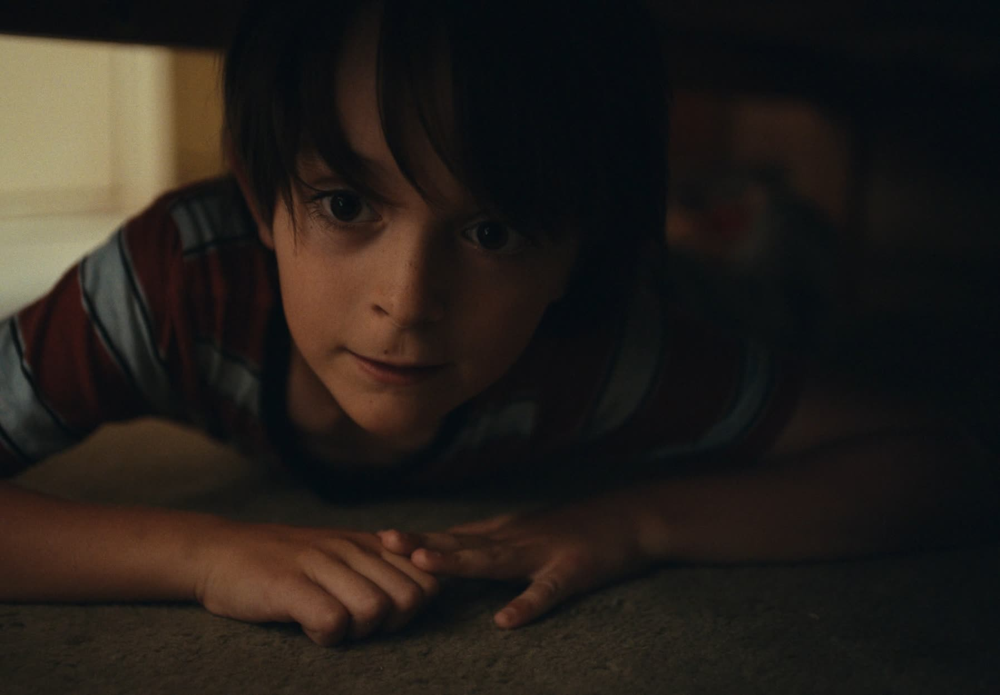
Камера живёт на высоте Самата — 70–90 см от пола. Мы не смотрим на него сверху, как обычно смотрят на детей в рекламе, а идём рядом. Взрослые попадают в кадр так, как он их видит: колени, руки — и лица, когда они наклоняются к нему.
Камера А — ручная или гимбал, 24–35 мм, вплотную к ребёнку. Камера Б — наблюдатель с длинным объективом из-за края площадки: малыш её не замечает, а родители не играют, а просто смотрят на своего ребёнка.
Обе пишут весь блок и между дублями: лучшая реакция случается, когда все решили, что снимать закончили.
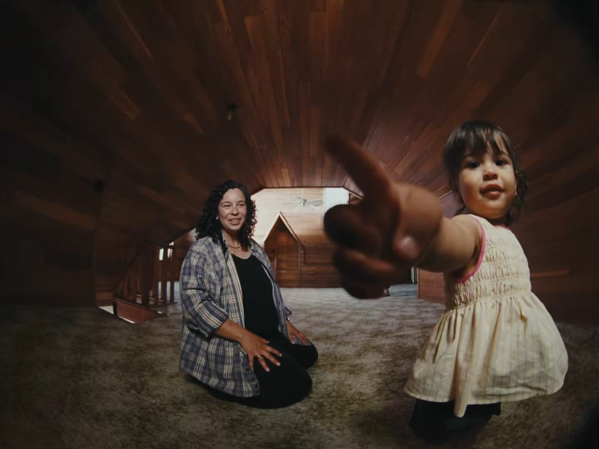
Весело, солнечно, без сахара. Эмоции настоящие, пойманные, а не сыгранные: мы снимаем как документалисты, которых пустили в очень счастливую семью. Смешное рождается из контраста — серьёзное лицо под жирафьими рожками.
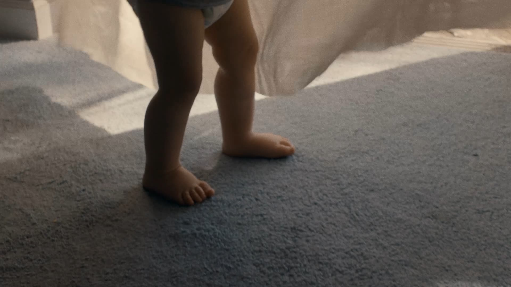
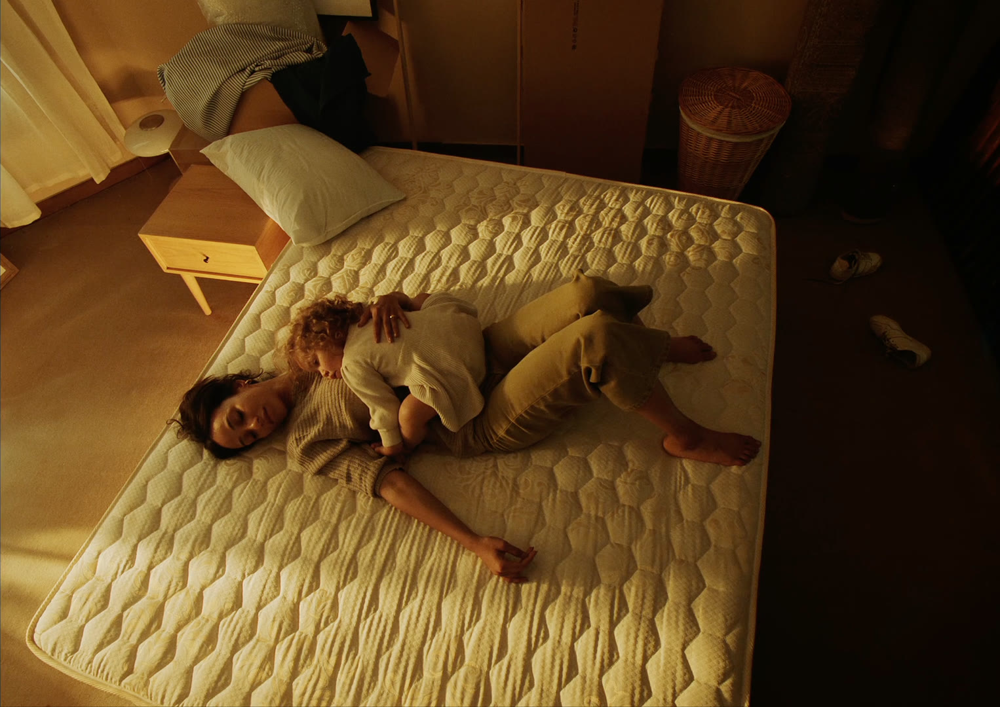
Лето, солнце в контровом сквозь листву. Высокий ключ, лёгкая дымка по краям кадра, прозрачные тени. Снимаем в режимное время, утром и ближе к вечеру, когда солнце мягкое, а детские лица чистые.
Дома — большие окна, тюль и солнечное пятно на полу, через которое пробегает Самат.
Цвет плотный и естественный: молочный, песочный, сочная зелень, пыльно-голубой плед. Оранжевый — только у Самата: рюкзак, сандалии, упаковка. Так глаз всегда находит героя.
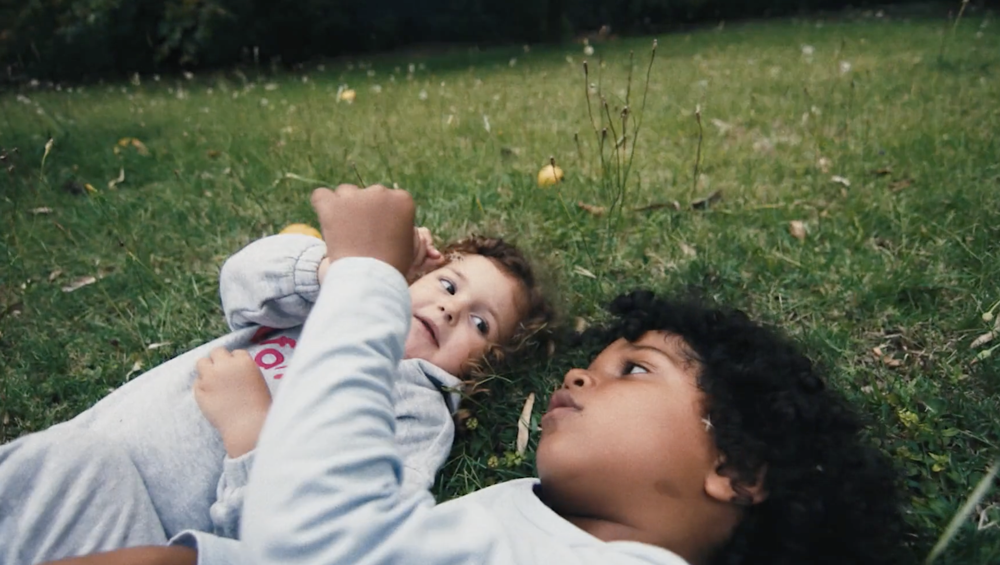
FEEL
Две локации: светлая гостиная и парк, где площадка, песочница и полянка стоят рядом. Вещи здесь — сюжет: жирафий кигуруми, туба с каракулями, оранжевый рюкзачок, клетчатый плед. У каждой вещи свой крупный план.
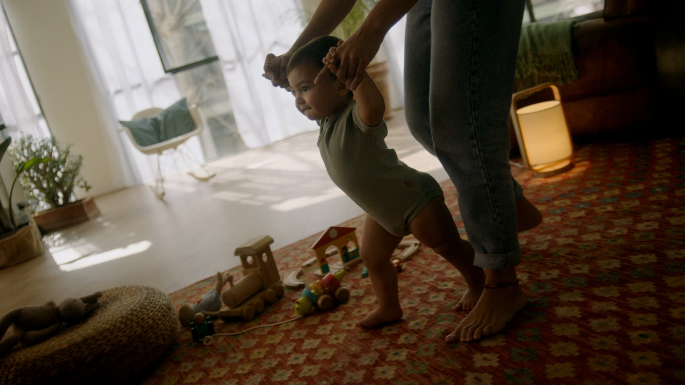
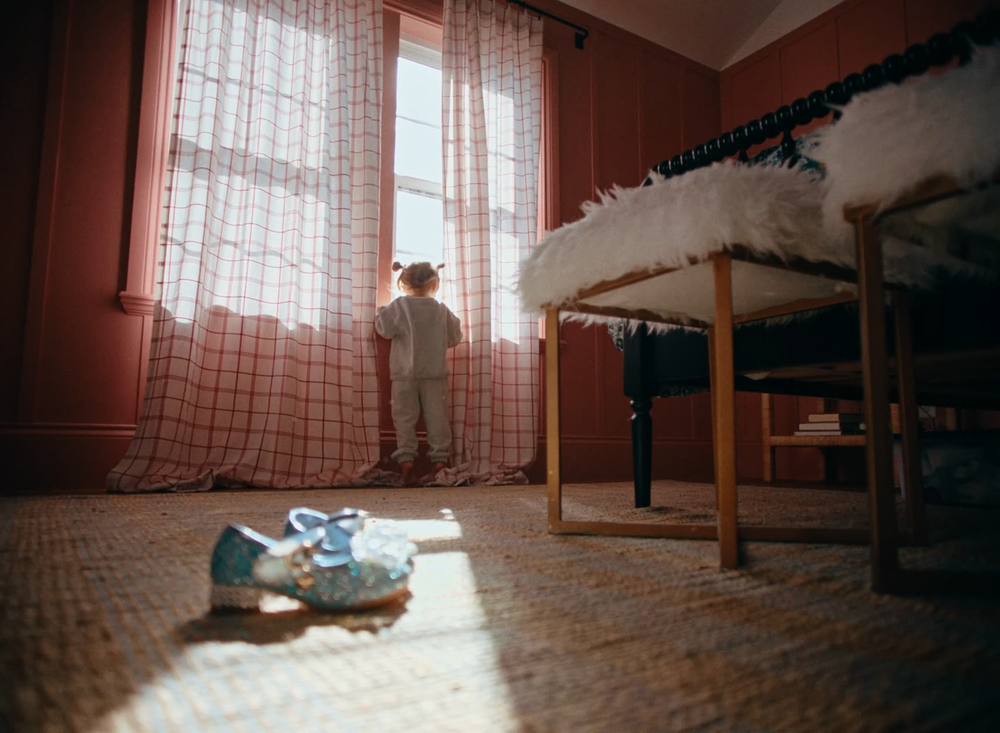
С Саматом не репетируют — с ним играют. Папа рычит первым, и Самат отвечает. Ведёрко звучит, если по нему постучать. Замок мы строим вместе, чтобы ему самому захотелось его разрушить. Мама всегда в шаге от кадра.
Монтаж прячется в движении: Самат пробегает вплотную к объективу и закрывает кадр собой. Круг рифмуется — туба, ведёрко, крышечка дой-пака. Первый звук ролика — звонкий детский рык, последний — джингл, которым он дирижирует.
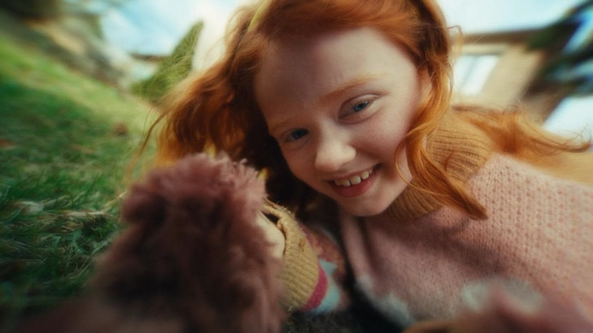